01 / DATA AS AN ECOSYSTEM
🐠 Aquarium
Every fish is a repository. A real boids simulation runs headless, then bakes motion into an animated SVG that GitHub can render in a README.
A compact portfolio of code-driven experiments: flocking, flow fields, GitHub data, and playable games that stay inside hard runtime constraints.
Three projects, one shared idea: rules create life.
Every fish is a repository. A real boids simulation runs headless, then bakes motion into an animated SVG that GitHub can render in a README.
One lamp, two jobs. The school follows the light; the hunter is blinded by it. The fish never know where safety is — the water does.
A playable ad where cohesion, separation, and alignment are not decoration — they are the three verbs the player learns and uses.
Generated from the public GitHub profile

Restaurant order-tray prototype